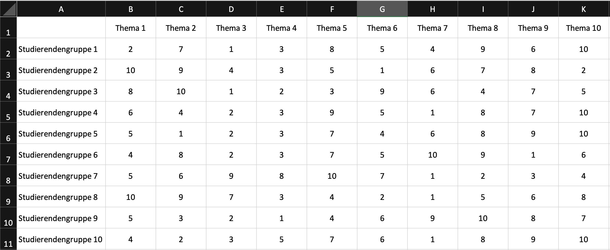
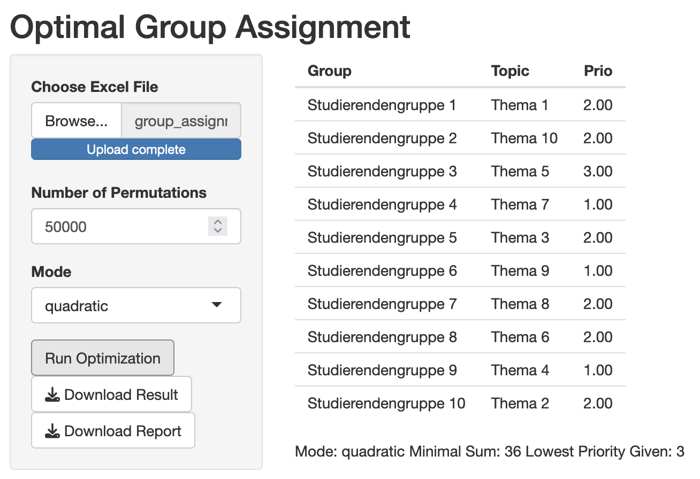

Assigning Topics to (Groups of) Students in Seminars
You can go back to the project overview here
I have written a small program for my seminars that assigns students (or student groups) to seminar topics by optimising the rankings that the students give to the topics.
The way it works is that a square matrix is entered into an Excel file with the students (groups) in the rows and the topics in the columns. Each student (group) gives each topic a ranking (1 = highest ranked topic). If not all topics are to be ranked, the topics with missing values are set to 20. The Excel file needs both column and row labels to be registered correctly.
The algorithm then takes this matrix and attempts to minimize the sum of the diagonals through permutations. To do this, the order of the columns is randomly changed and the assignment and the sum are saved. After the specified number of permutations, the constellation with the lowest sum is selected and displayed as the result. The default setting is 10,000 permutations, which I would adjust depending on the size of the group. For my seminars with approx. 10 groups and topics, approx. 50,000 permutations work very well for me. The linear mode is also set by default, which gives each ranking a linear weight. This means that no distinction is made as to whether a low total is the result of all topics being assigned priority 1, but one topic only being assigned priority 9, or whether the overall priorities are more likely to be 2. The quadratic mode is used to penalize low rankings more strongly. Here, the rankings are squared, then the optimization is carried out and only at the end is the original ranking calculated again. This may result in individual rankings being lower, but overall it means that low rankings are awarded less frequently.
In my seminars last year, I was able to assign the topics to all student groups in such a way that everyone got their 1st to 4th preference. Due to the large number of possibilities, it is helpful to run the program several times (even with 50,000 permutations) and then look at both the highest assigned priority and the total sum in order to minimize both.
You can find the program here, and a more detailed example is shown below.
Beispiel
The data for this example are original rankings from one of my seminars. Here is an overview:

The best constellation I could find for this data was with 50,000 permutations and the quadratic mode:

To do this, I ran the program a few times by clicking on “Run Optimization” more often. As topic 5 was not ranked higher than 3 by any group, no better priority can be assigned here.
Try out the program with the sample data, maybe you’ll find a lower total! Here you can download the data.